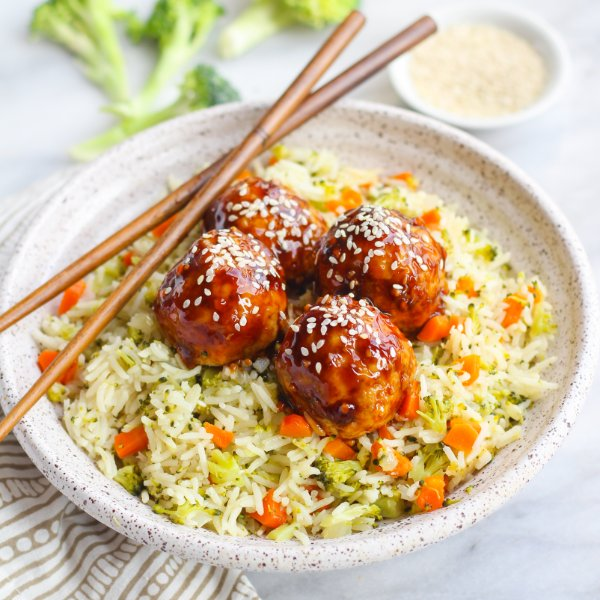

Teriyaki Salmon Meatballs with Broccoli, Carrot & Rice Pilaf

Nutrition (per serving)
598.1 kcalCalories
41.1 gProtein
82.1 gCarbs
12.9 gFat
Full nutrition table
| Calories | 598.1 kcal |
| Total fat | 12.9 g |
| Saturated fat | 2.6 g |
| Trans fat | 0.1 g |
| Cholesterol | 170.2 mg |
| Sodium | 588.6 mg |
| Carbohydrates | 82.1 g |
| Fiber | 5.7 g |
| Sugars | 23.9 g |
| Protein | 41.1 g |
| Potassium | 1221.8 mg |
| Calcium | 430.6 mg |
| Iron | 5.5 mg |
| Vitamin A | 725.7 IU |
| Vitamin C | 83.1 mg |
| Vitamin D | 635.7 IU |
Cookware
Ingredients
- 1 cupbasmati rice
- 2 crownsbroccoli
- 2 mediumcarrots
- 16 fl ozchicken or vegetable broth
- 2eggs
- 4 clovesgarlic
- 2 (1 inch) piecesginger root
- 2 (7.5 oz) canswild pink salmon, traditional style
- 2 mediumyellow onions
- black pepper
- cornstarch
- extra virgin olive oil
- honey
- panko bread crumbs
- rice vinegar
- salt
- sesame seeds
- soy sauce
Steps
- Preheat oven to 350°F.
- Wash and dry the fresh produce.2 crowns broccoli
2 medium carrots
2 (1 inch) pieces ginger root - Peel and mince the onions. Transfer half to a large bowl and set aside. Transfer the rest to a medium saucepan.2 medium yellow onions
- Chop broccoli into small pieces. Peel, trim, and small dice carrots. Add both to the saucepan with the onion.
- Add rice and broth to the pan with the veggies, stirring to combine. Bring to a boil over high heat.1 cup basmati rice
16 fl oz (2 cups) chicken or vegetable broth - Meanwhile, drain salmon and place in the bowl with the onion. Add bread crumbs, eggs, salt, and pepper; mix well to combine.2 (7.5 oz) cans wild pink salmon, traditional style
½ cup panko bread crumbs
2 eggs
½ tsp salt
¼ tsp black pepper - Once the liquid comes to a boil, scrape down the edges of the saucepan so that all of the rice grains are in the liquid. Cover the saucepan, reduce heat to low, and cook until the liquid is fully absorbed, 15-18 minutes. Once done, remove from the heat and let it stand, still covered, for 5 minutes.
- Coat a large baking dish with a thin layer of oil. Form the salmon mixture into 2-inch rounded meatballs and place them in the baking dish. Place the dish in the oven and bake until set, 15-18 minutes.2 tsp extra virgin olive oil
- Meanwhile, peel and mince garlic and ginger.4 cloves garlic
- Combine garlic, ginger, soy sauce, honey, and vinegar in small saucepan. Bring to a boil over high heat and cook until slightly thickened, 2 minutes.½ cup soy sauce
¼ cup honey
¼ cup rice vinegar - In a small bowl, make a slurry by whisking water with cornstarch until smooth.¼ cup water
4 tsp cornstarch - Add cornstarch slurry to the saucepan in a steady stream while stirring quickly. Cook, stirring often, until sauce thickens, 2 minutes. Remove from heat.
- Once the salmon meatballs are done, pour the teriyaki sauce over the meatballs and gently toss to coat.
- To serve, divide rice and salmon meatballs between plates. Garnish with sesame seeds and enjoy!2 tsp sesame seeds